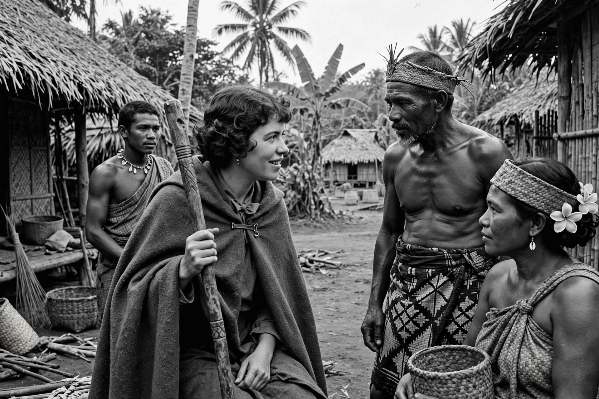

Margaret Mead (16 December 1901 – 15 November 1978) was an American cultural anthropologist, author, and speaker, best known for Coming of Age in Samoa (1928), which argued that culture strongly shapes adolescent experience.

| Born | 16 Dec 1901, Philadelphia, US |
|---|---|
| Died | 15 Nov 1978, New York City |
| Known for | Coming of Age in Samoa |
A student of Franz Boas at Columbia, Mead did fieldwork in Samoa, Manus, New Guinea, and Bali. Her work emphasised enculturation and challenged biological determinism, influencing public debate on sex, gender, and child-rearing.
Curator at the American Museum of Natural History for decades, Mead was a prominent public intellectual. Derek Freeman later criticised her Samoan findings, sparking the Mead–Freeman controversy.